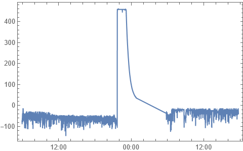

Garmin FITにおけるmesg_num 104が示す内容についての分析結果
Edge 830で実際の走行したログのFITファイルを見ると、Garmin FIT SDKでドキュメント化されていないメッセージが結構ある。
このうち、mesg_num 104が何を示しているのかについて特定することに成功した。
Fit File Viewerの紹介
FIT File ViewerはFITファイルの構造を見れるオンラインツールで、
設定画面でHide fields without name ('field #')とHide messages without name ('mesg_num #')をOFFにする(下図)ことで、SDKにない情報を見やすく表示できる。
mesg_num 104の概要
FIT File Viewerを使ってBRM1024 埼玉600 アタック日本海の走行ログを見ていたところ、
SDKに記述のないmesg_num 104のデータが1843個記録されていた。
field definition numberとして253が使われるときはFITタイムスタンプであることが多く、今回のデータでもfield 253の1番目の値972420938をFITタイムスタンプとして解釈すると、2020年10月24日05時55分38秒となり、走行開始した時刻と一致する。
したがって、field 253はタイムスタンプであることは確定。
2個目以降のタイムスタンプを見ると、60秒(1分)おきに記録されていることが分かる。
各フィールドの推察
残りのフィールドが何を示すのかを探っていくため、まずはグラフにしてみる。
いずれも横軸は時刻(2020年10月24日～2020年10月25日)である。
field 0:
field 1:
 field 2:

field 3:
field 2
一番推測がしやすいのがfield 2で、
- 0から100までの間の数値を取っている
- 基本的に一定ペースで減少している
- 10月24日の21時40分～25日0時52分の時間帯において増加しているが、これはモバイルバッテリーから充電しながら走行していた時間帯と一致する
ことから、field 2はバッテリー残量をパーセント単位で表示したものである。
field 0
次に、field 2と似た動きをしているのがfield 0である。
- バッテリー残量とかなり強い正の相関がある
field 2のようにキレイに変化するのではなく、センサから測定した値のようなバラつきがある- 3300から4400程度の値をとる
となると、field 0はバッテリーの電圧をmV単位で表示したものであると推定される。
FITの仕様では各フィールドに係数(scale)を指定できるので、仮にドキュメント化されたとしたら、単位はVで係数が1000、という表記となるだろう。
field 1
field 1はfield 0の微分値を見ているようなグラフになっていることから、バッテリーの消費電流または消費電力になっていると推測される(充電時は正、放電時は負)。
Garmin Edge 830のバッテリー容量はスペック表で公開されていないが、分解動画を見ると純正バッテリーの容量は1000mAhであった。
YouTube - GPSサイクルコンピューター GARMIN EDGE830 バッテリー交換修理の再生時間17:27より引用・加工
バッテリーの残量%の変化と、その間のfield 1の値の総和を調べると、
- 10月24日の5時55分から21時40分まで:
- バッテリー残量: 97% → 4%
field 1の値の総和: -57335
- 10月24日の21時40分から25日の0時52分まで:
- バッテリー残量: 4% → 94%
field 1の値の総和: 54716
- 10月25日の5時46分から17時43分まで:
- バッテリー残量: 100% → 63%
field 1の値の総和: -23086
概ね1分間隔で記録されていることから、field 1は電流をmA単位で表していると仮定して、それぞれバッテリー容量を計算してみると
$$ -57335_{\mathrm{[mA]}} \times 60_{\mathrm{[s]}} / 3600_{\mathrm{[s/h]}} / (4\% - 97\%) = 1027.51 {}_{\mathrm{[mAh]}}$$
$$ 54716_{\mathrm{[mA]}} \times 60_{\mathrm{[s]}} / 3600_{\mathrm{[s/h]}} / (94\% - 7\%) = 1013.26 {}_{\mathrm{[mAh]}}$$
$$ -23086_{\mathrm{[mA]}} \times 60_{\mathrm{[s]}} / 3600_{\mathrm{[s/h]}} / (63\% - 100\%) = 1039.91 {}_{\mathrm{[mAh]}}$$
となり、いずれもバッテリーの容量である1000mAhとほぼ一致した。
したがって、field 1はバッテリーの消費電流をmA単位で表示したものであることが判明した。
field 3
最後のfield 3は他のフィールドと違った動きをしている。
上記で電流、電圧がすでに他のフィールドに記録されていることが分かっているので、残るものとして温度が最有力である。
そこで外気温と重ね合わせたものが下図である。
グラフから特徴を読み取ると、
field 3の値は外気温より概ね2℃程度高い値を示しつつ、動きはかなり一致している- 充電中(24日の21時40分から25日の0時52分まで)は外気温との乖離が大きく、10℃程度高くなっている
ことから、やはりfield 3はバッテリーの温度を摂氏温度単位で表示したものであった。
結論
以上より、mesg_num 104はバッテリー情報についてのメッセージであることを特定できた。
各フィールドの値は
field 253: タイムスタンプfield 0: バッテリー電圧(単位はmV)field 1: バッテリー消費電流(単位はmA)field 2: バッテリー残量(単位は%)field 3: バッテリー温度(単位は℃)
と推定される。